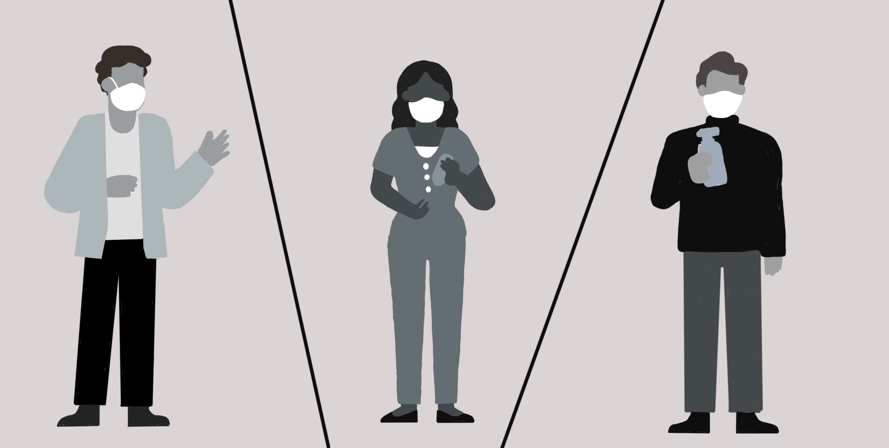
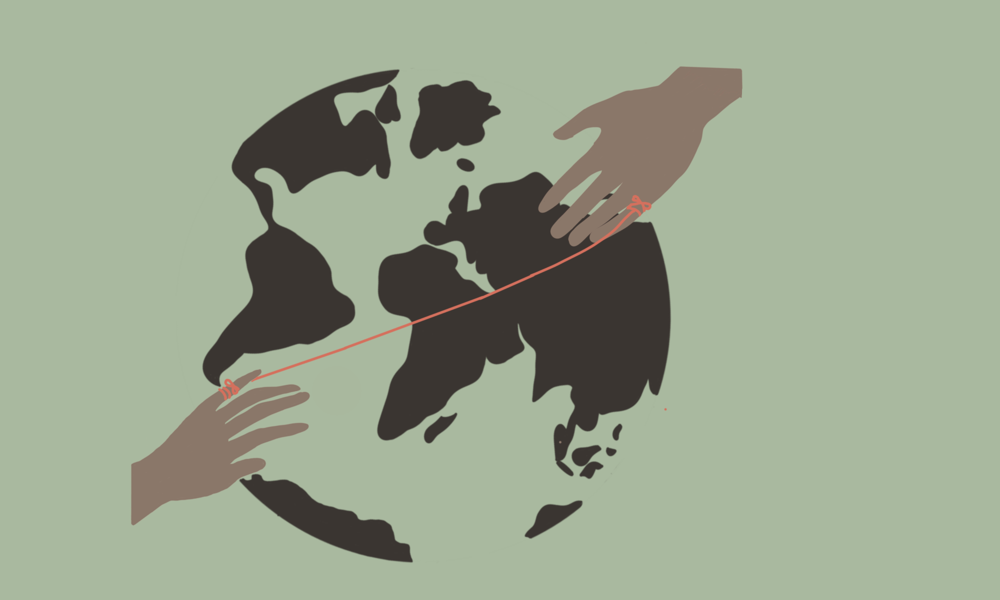
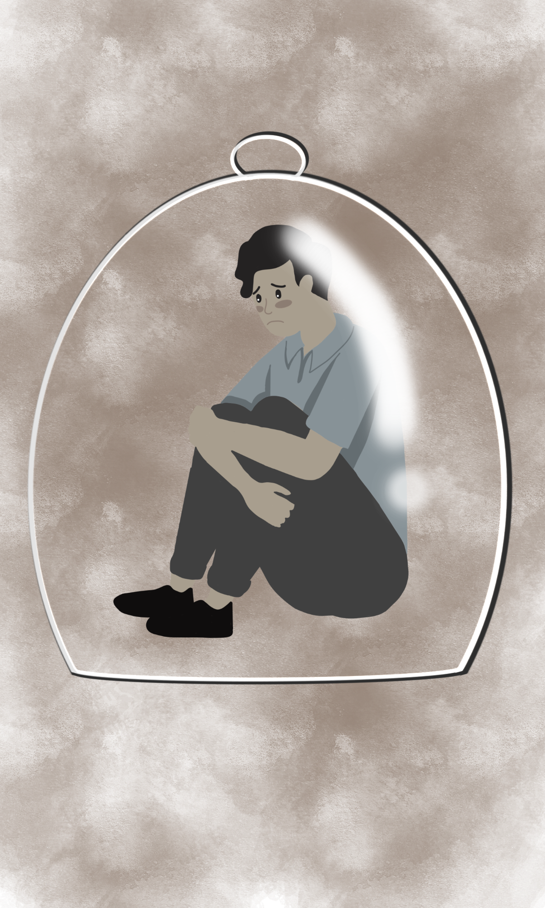

Recent events have been a catalyst of cly with our connection to others.

Suddenly, the closeness we took for granted shatters. Its not uncommon to find yourself across the world from those you love and care about.

It can leave us feeling completely isolated. Cut-off. Alone.
Yes, with the current technology at our fingers, its easy to communicate with those distanced from you. Text messages, social media and video calls all exist.
But are they enough? Is staring at a screen to have some connection with a loved one enough to ease the ache? What if there was more?

What if you could use virtual reality to see your loved one up close, communicate with the like they're just meters away from you instead of oceans away? so close and so real you can almost touch them.

What if, in the future, you could wear a braclet that pulsed with your loved one's heartbeat? Feel it against your skin no matter how far apart you were. Have a part of them with you even though ypu're thousands of kilometers away.

What if you could have them at your finger tips, just in hologram form. What if the future allowed you to project holograms of your loved ones right
into your livingroom? Coexist with them just for a few ours like you aren't at great distance.